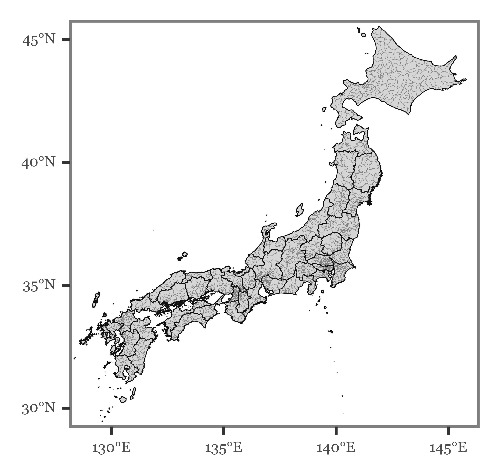
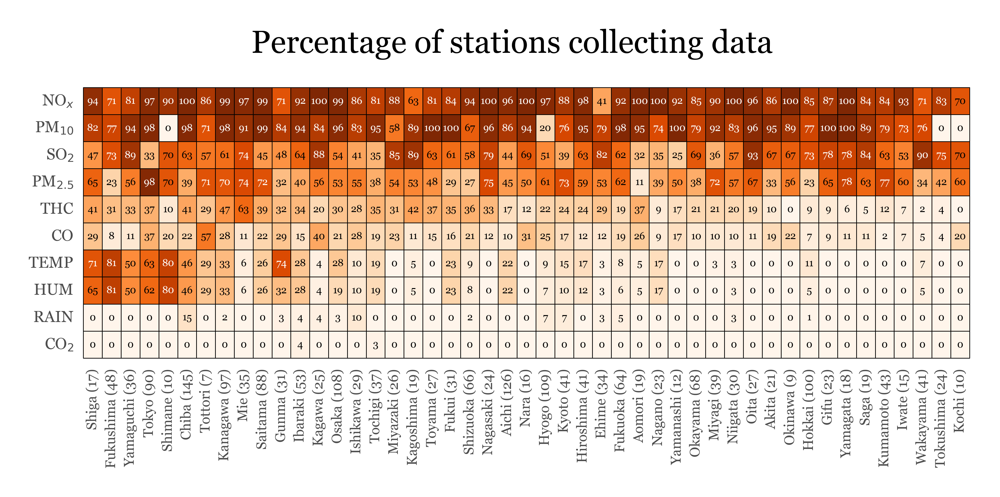
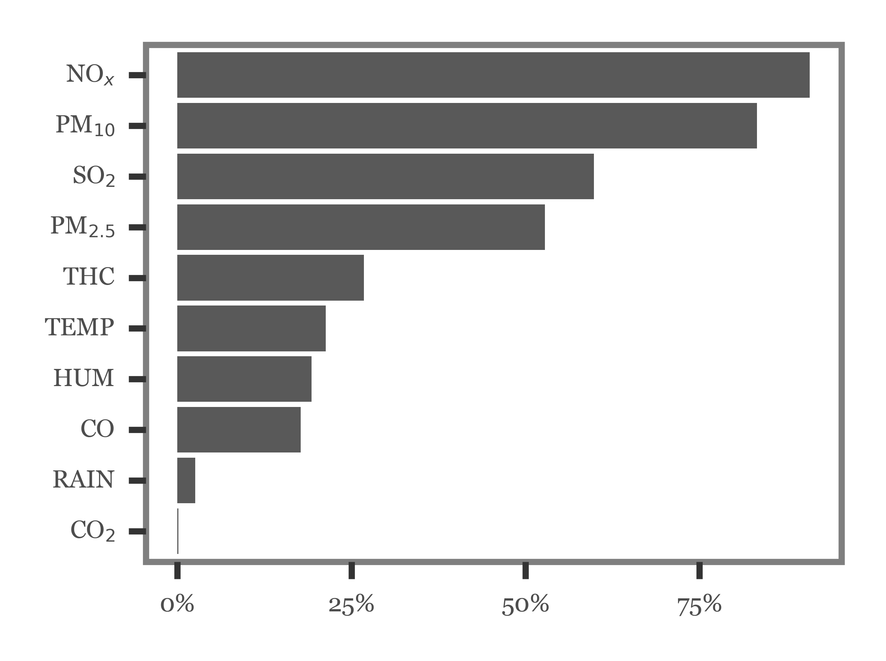
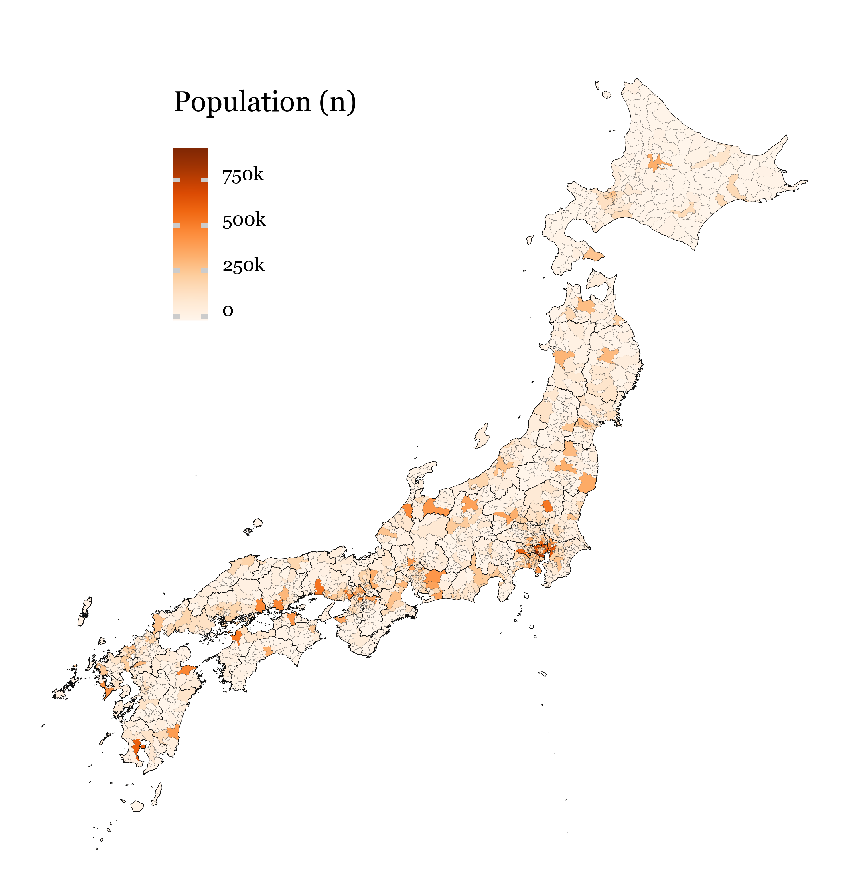
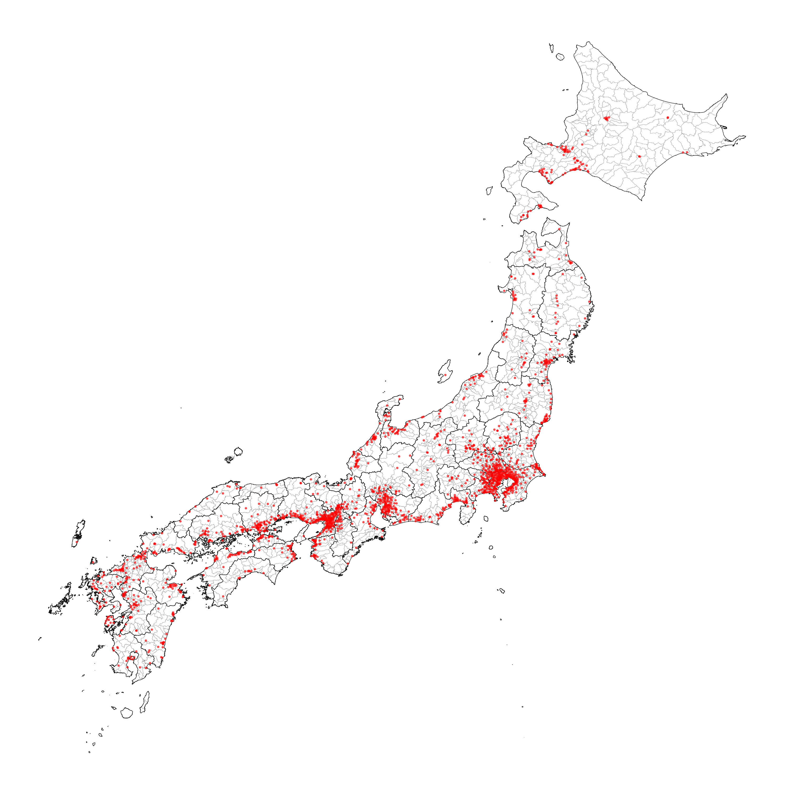

import os
import requests
import numpy as np
import pandas as pd
import plotnine as p9
import geopandas as gpd
import matplotlib as mpl
import matplotlib.pyplot as plt
from tqdm import tqdm
from IPython.display import Image
from collections import defaultdict
from shapely.geometry import box, Point
from matplotlib_inline.backend_inline import set_matplotlib_formats
from mizani.formatters import date_format, percent_format, custom_formatJapanese Air Pollution Data
Computing prefecture-wise weighted averages
Show code imports and presets
Preamble
Imports
Pre-sets
tqdm.pandas()
set_matplotlib_formats('retina')
p9.options.set_option('dpi', 600)
p9.options.set_option('figure_size', (4, 3))
p9.options.set_option('base_family', 'Georgia')
p9.theme_set(p9.theme_bw() + p9.theme(axis_text=p9.element_text(size=7),
axis_title=p9.element_text(size=9),
title=p9.element_text(size=11)))Data Loading
With daily data of the monitoring stations already collected from the official site, cleaned, and pre-processed to daily averages stored in data/air_pollution/stations/clean, we are now going to collect two different sources of information that should enable us to compute population weighted averages of the station data per prefecture. The files will be the following:
- Population density per municipality in Japan
- Shapefiles of the said municipalities so as to be able to match the location of the monitoring station to a certain number of population
Fetching the shapes
While several sources of shapefiles ara available online, I could not find any that included the same municipal codes that would enable a match with the population data obtained from the official Japanese statistics site.
This site, however, also provides a very precise collection of shapefiles for each of the 47 prefectures, with areas smaller than the municipal level (the one we are interested in), but with municipal-level identifiers, so we can fuse the shapes to obtain exactly the shapes for all municipalities in Japan.
Let’s do exactly that:
def get_download_url(code):
url = 'https://www.e-stat.go.jp/gis/statmap-search/data?dlserveyId=A002005212015' \
f'&code={code}&coordSys=1&format=shape&downloadType=5&datum=2000'
return urlshapes_path = '../data/shapefiles/administrative_boundaries'
if not os.path.exists(f'{shapes_path}/municipality_shapes.shp'):
municipality_shapes = []
for i in tqdm(range(1, 48), total=47):
municipality_shapes.append(
gpd.read_file(get_download_url(str(i).zfill(2))).dissolve(by='CITY')
)
municipality_shapes = pd.concat(municipality_shapes).reset_index()[['PREF', 'CITY', 'geometry']]
prefecture_shapes = municipality_shapes.dissolve(by='PREF').reset_index()[['PREF', 'geometry']]
municipality_shapes.to_file(f'{shapes_path}/municipality_shapes.shp')
prefecture_shapes.to_file(f'{shapes_path}/prefecture_shapes.shp')
else:
municipality_shapes = gpd.read_file(f'{shapes_path}/municipality_shapes.shp')
prefecture_shapes = gpd.read_file(f'{shapes_path}/prefecture_shapes.shp')We now have the equivalent shapefiles grouped at the municipal and the prefectural level, leading to a map of Japan like the following:
Show Code
(p9.ggplot(municipality_shapes)
+ p9.geom_map(alpha=.2, size=.05, color='gray')
+ p9.geom_map(data=prefecture_shapes, size=.15, alpha=0)
+ p9.scale_y_continuous(labels=custom_format('{:0g}°N'), limits=(30, 45))
+ p9.scale_x_continuous(labels=custom_format('{:0g}°E'), limits=(129, 145.5))
+ p9.theme(figure_size=(2.5, 2.5),
axis_text=p9.element_text(size=5),
panel_grid=p9.element_blank())
)
Fetching municipalities populations
The same Statistics portal that we used to fetch the shapefiles provides an API to fetch different variables recorded by the government. It is necessary to register in the system to obtain an identifier that accompanies the requests to the API in order to be granted access. The documentation to use the API can be found here (it’s all in Japanese but it’s manageable with Google translate).
We’ll start by defining the API URL preceding the parameters specifying the version of the API we will be using (3.0) and the output we want (json):
API_URL = 'http://api.e-stat.go.jp/rest/3.0/app/json/getStatsData'I have already checked the variables I am interested in, although there are plenty more to choose. We will be fetching the following codes:
jp_api_codes = {'A1101': 'Total population (Both sexes)',
'A110101': 'Total population (Male)',
'A110102': 'Total population (Female)',
'A1301': 'Total population (under 15)',
'A130101': 'Population (under 15, Male)',
'A130102': 'Population (under 15, Female)',
'A1302': 'Total population (15-64)',
'A130201': 'Population (15-64, Male)',
'A130202': 'Population (15-64, Female)',
'A1303': 'Total population (65 and over)',
'A130301': 'Population (65 and over, Male)',
'A130302': 'Population (65 and over, Female)',
'A1405': 'Population (0-5, Total)',
'A140501': 'Population (0-5, Male)',
'A140502': 'Population (0-5, Female)',
'A1416': 'Population (60 and over, Total)',
'A141601': 'Population (60 and over, Male)',
'A141602': 'Population (60 and over, Female)',
'A1417': 'Population (70 and over, Total)',
'A141701': 'Population (70 and over, Male)',
'A141702': 'Population (70 and over, Female)',
'A1420': 'Population (85 and over, Total)',
'A142001': 'Population (85 and over, Male)',
'A142002': 'Population (85 and over, Female)'
}I have saved my personal appID in a non-shared file in the root folder as .appID. Let’s read it so as to include it in the request URL:
with open('../.appID', 'r') as fh:
API_ID = fh.read()We need to URL encode all the variables in the requests, which should be done by joining them with the %2C characters:
variables_string = '%2C'.join(list(jp_api_codes.keys()))The full request will be the following:
url = (f'{API_URL}' # Main API URL
f'?cdCat01={variables_string}' # Specify the variables selected
f'&appId={API_ID}' # Add the API ID to be allowed access
'&lang=E' # Specify the language to be English
'&statsDataId=0000020201' # Specify the dataset to be used
'&cdTimeFrom=2015') # Request data from the last census (2015)r = requests.get(url)full_population_df = (pd.DataFrame(r.json()
['GET_STATS_DATA']['STATISTICAL_DATA']['DATA_INF']['VALUE'])
.loc[lambda dd: dd['@time'].str.startswith('2015')]
.drop(columns=['@tab', '@time', '@unit'])
.rename(columns={'@area': 'area_code'})
.pivot('area_code', '@cat01', '$')
.rename(columns=jp_api_codes)
)I will keep an already processed version of this dataset in the repository as an easily accessible CSV table to ease future usage of the files.
full_population_df.to_csv('../data/population/municipal_population_stats.csv')full_population_df = pd.read_csv('../data/population/municipal_population_stats.csv')Matching stations, municipalities, and populations
Since my main interest lies on relating the environmental variables to Kawasaki Disease incidence in Japan, I am going to use the municipal population of children under 5 years old to weight the importance of each municipal term in the prefecture averages:
jp_pops_kids = (full_population_df
.reset_index()
.rename(columns={'area_code': 'code'})
.assign(code=lambda dd: dd.code.astype(str).str.zfill(5))
.assign(population=lambda dd: dd['Population (0-5, Total)'].astype(int))
[['code', 'population']]
)jp_pops_full = (full_population_df
.reset_index()
.rename(columns={'area_code': 'code'})
.assign(code=lambda dd: dd.code.astype(str).str.zfill(5))
.assign(population=lambda dd: dd['Total population (Both sexes)'].astype(int))
[['code', 'population']]
)jp_munis = (municipality_shapes
.reset_index()
.assign(code=lambda dd: dd.PREF + dd.CITY.astype(str))
[['PREF', 'CITY', 'code', 'geometry']]
)We can now load the monitoring stations information, and use their coordinates to assign a municipal boundary to each of them. This way, we will be able to average a value for each municipality using the values of the monitoring stations within its boundaries.
info_dir = '../data/air_pollution/stations/doc/stations_info.csv'
monitoring_stations = (pd.read_csv(info_dir)
.assign(geometry=lambda dd: [Point(np.array([x, y]))
for x, y in zip(dd.longitude, dd.latitude)])
.pipe(lambda dd: gpd.GeoDataFrame(dd, geometry='geometry', crs='EPSG:4612'))
)station_munis = (gpd.sjoin(monitoring_stations, jp_munis, predicate='within')
.merge(jp_munis
[['code', 'geometry']]
.rename(columns={'geometry': 'm_polygon'}))
)stations_per_city = station_munis.groupby(['PREF', 'CITY']).station_code.unique()prefectures_map = (monitoring_stations
[['prefecture', 'prefecture_code']]
.drop_duplicates()
.set_index('prefecture_code')
['prefecture']
.to_dict()
)Generating the daily averaged municipal estimates
municipal_pollution_dfs = []
for (pref, city), stations in tqdm(stations_per_city.items(), total=len(stations_per_city)):
municipal_stations = []
pref_name = prefectures_map[int(pref)]
for station in stations:
municipal_stations.append(
pd.read_csv(f'../data/air_pollution/stations/clean/{pref}_{pref_name}/{station}.csv')
.assign(date=lambda dd: pd.to_datetime(dd.date))
)
municipal_stations = (pd.concat(municipal_stations)
.set_index('date')
.resample('D')
.mean())
municipal_pollution_dfs.append(municipal_stations.assign(pref=pref, city=city))
municipal_stations.round(3).to_csv(f'../data/air_pollution/municipalities/{pref}{city}.csv')
municipal_pollution_dfs = pd.concat(municipal_pollution_dfs)Generating the daily averaged prefectural estimates
Now, by using the municipal values and weighting them by different factors, we will be able to obtain prefecture-level estimates:
long_pollution_df = (municipal_pollution_dfs
.reset_index()
.melt(['date', 'pref', 'city'])
.dropna()
.eval('code = pref + city')
)Area-weighted averages
The first prefectural estimates we will estimate will be population agnostic, that is, each municipality will have a weight proportional to its area:
jp_areas = (jp_munis
.eval('area = geometry.to_crs("+proj=cea").area / 10**6')
[['code', 'area']]
)area_dir = '../data/air_pollution/prefectures/area_weighted/'
for prefecture, df in long_pollution_df.groupby('pref'):
pref_df = (df.groupby(['date', 'variable'])
.progress_apply(lambda df: df
.merge(jp_areas)
.eval('weight = area / area.sum()')
.eval('value = value * weight')
.value.sum())
.rename('value')
.reset_index()
.pivot(index='date', columns='variable', values='value')
)
pref_df.round(3).to_csv(f'{area_dir}{prefecture}.csv')
Weighting by population of children under 5 years old
In this case we will weigh its municipality proportional to the relative amount of children under 5 years old living in it:
child_pop_dir = '../data/air_pollution/prefectures/under_5_weighted/'
for prefecture, df in long_pollution_df.groupby('pref'):
pref_df = (df.groupby(['date', 'variable'])
.progress_apply(lambda df: df
.merge(jp_pops_kids)
.eval('weight = population / population.sum()')
.eval('value = value * weight')
.value.sum())
.rename('value')
.reset_index()
.pivot(index='date', columns='variable', values='value')
)
(pref_df.round(3).to_csv(f'{child_pop_dir}{prefecture}.csv')
)Weighting by full population density
In the last case, we will weigh each municipality proportional to the total population living in each term.
pop_dir = '../data/air_pollution/prefectures/population_weighted/'
for prefecture, df in long_pollution_df.groupby('pref'):
pref_df = (df.groupby(['date', 'variable'])
.progress_apply(lambda df: df
.merge(jp_pops_full)
.eval('weight = population / population.sum()')
.eval('value = value * weight')
.value.sum())
.rename('value')
.reset_index()
.pivot(index='date', columns='variable', values='value')
)
pref_df.round(3).to_csv(f'{pop_dir}{prefecture}.csv')Visualizing the data
Number of stations per variable per prefecture
While there are many stations, not all variables are measured with the same consistency. The following table shows how many stations measure each variable in each prefecture:
variable_map = {'NOX': 'NO$_{x}$',
'PM25': 'PM$_{2.5}$',
'SO2': 'SO$_2$',
'CO2': 'CO$_2$',
'SPM': 'PM$_{10}$'}Show Code
(monitoring_stations
.drop(columns=['station_code', 'latitude', 'longitude', 'altitude'])
.groupby(['prefecture', 'prefecture_code'])
.sum(numeric_only=True)
.astype(int)
.sort_values('prefecture_code')
.apply(lambda x: x / monitoring_stations
.groupby('prefecture_code')
.station_code.nunique())
.applymap(lambda x: round(x * 100, 2))
.reset_index()
.melt(['prefecture', 'prefecture_code'])
.query('not variable.isin(["NO", "NO2", "CH4", "NMHC"])')
.replace(variable_map)
.merge(monitoring_stations
.groupby('prefecture_code')
.station_code
.nunique()
.rename('n_stations')
.reset_index())
.assign(pref_name=lambda dd: dd.prefecture.str.split('-').str[0] +
' (' + dd.n_stations.astype(str) + ')')
.pipe(lambda dd:
p9.ggplot(dd)
+ p9.aes(x='reorder(variable, value, ascending=True)',
y='reorder(pref_name, value, ascending=False)',
fill='value')
+ p9.geom_tile(color='black')
+ p9.geom_text(p9.aes(label='value.round(0).astype(int)',
color='value > 70'), size=2.5)
+ p9.theme_minimal()
+ p9.scale_color_manual(values=['black', 'white'])
+ p9.scale_fill_continuous('Oranges')
+ p9.guides(fill=False, color=False)
+ p9.labs(x='', y='', title='Percentage of stations collecting data')
+ p9.coord_flip()
+ p9.theme(figure_size=(4, 1.25),
title=p9.element_text(size=8),
axis_text_x=p9.element_text(angle=90, size=3.5, margin={'t': -10}),
axis_text_y=p9.element_text(size=4, ha='right', margin={'r': -10}),
panel_grid=p9.element_blank())
)
)
Only NOx, SPM (or PM10), SO2 and PM2.5 are variables measured by over 50% of all stations, the rest are present in smaller numbers, which might limit the accuracy of the prefecture-level estimates:
Show Code
(monitoring_stations
.drop(columns=['station_code', 'latitude', 'longitude', 'altitude'])
.groupby(['prefecture', 'prefecture_code'])
.sum(numeric_only=True)
.astype(int)
.sum()
.pipe(lambda x: x / monitoring_stations.station_code.nunique())
.rename('ratio')
.reset_index()
.query('not index.isin(["NO", "NO2", "CH4", "NMHC"])')
.replace(variable_map)
.pipe(lambda dd: p9.ggplot(dd)
+ p9.aes('reorder(index, ratio)', 'ratio')
+ p9.geom_col()
+ p9.coord_flip()
+ p9.labs(x='', y='')
+ p9.scale_y_continuous(labels=percent_format())
+ p9.theme(figure_size=(2, 1.5),
axis_text=p9.element_text(size=4),
panel_grid=p9.element_blank())
)
)
Estimation of population coverage per prefecture
We will apply a quite naïve (and probably conservative) method to estimate the percentage of population ‘covered’ by monitoring stations: the % of population in a municipality with at least a station. The population living in municipalities without any station will be considered as uncovered by this metric (which might be a tad unfair as municipal terms can often be really small).
jp_munis = jp_munis.assign(has_station=lambda dd: dd.code.isin(station_munis.code))pop_coverage = (jp_munis
.merge(jp_pops_full)
.groupby('PREF')
.apply(lambda dd: dd.query('has_station').population.sum() /
dd.population.sum())
.rename('pop_coverage')
.reset_index()
.set_index('PREF')
)The prefecture of Tokyo has many small islands (barely inhabited) which distort completely the shape of the region. Let’s get ride of those for the plots:
jp_munis = pd.concat([jp_munis.query("PREF!='13'"),
jp_munis.query("PREF=='13'")
.query('geometry.bounds.miny > 35')])Population map
Show Code
(p9.ggplot(jp_munis.merge(jp_pops_full))
+ p9.geom_map(p9.aes(fill='population'), size=.01)
+ p9.geom_map(data=prefecture_shapes, size=.05, alpha=0)
+ p9.scale_fill_continuous('Oranges', breaks=[0, 250_000, 500_000, 750_000], labels=['0', '250k', '500k', '750k'])
+ p9.scale_y_continuous(labels=custom_format('{:0g}°N'), limits=(30, 45))
+ p9.scale_x_continuous(labels=custom_format('{:0g}°E'), limits=(129, 145.5))
+ p9.theme_void()
+ p9.labs(fill='Population (n)')
+ p9.theme(figure_size=(3, 3),
legend_key_size=5,
legend_position=(.35, .75),
legend_direction='vertical',
legend_title=p9.element_text(size=6),
legend_text=p9.element_text(size=4, va='baseline'),)
)
Stations map
Show Code
f = (p9.ggplot(jp_munis)
+ p9.geom_map(size=.01, fill='white')
+ p9.geom_map(data=prefecture_shapes, size=.05, alpha=0)
+ p9.geom_point(p9.aes(x='longitude', y='latitude'), data=monitoring_stations, size=.3, stroke=0, alpha=.7, color='red')
+ p9.scale_y_continuous(limits=(30, 45))
+ p9.scale_x_continuous(limits=(129, 145.5))
+ p9.guides(fill=False)
+ p9.theme_void()
+ p9.theme(figure_size=(3, 3),
dpi=600)
).draw()
f.savefig('../data/air_pollution/stations/doc/stations_map.png')
Population coverage map
stats_df = defaultdict(list)
for i in range(1, 48):
shape = jp_munis.query(f'PREF=="{str(i).zfill(2)}"')
stations = monitoring_stations.query(f'prefecture_code=={i}')
stats_df['prefecture'].append(prefectures_map[i].split('-')[0])
stats_df['prefecture_code'].append(i)
stats_df['n_stations'].append(len(stations))
stats_df['coverage'].append((pop_coverage.loc[str(i).zfill(2)] * 100).round(2).values[0])
bounds = shape.bounds.agg(['min', 'max']).values
stats_df['ar'].append((bounds[1, 3] - bounds[0, 1]) / (bounds[1, 2] - bounds[0, 0]))
stats_df = pd.DataFrame(stats_df)To actually visualize the prefecture by prefecture population coverage, I generated a figure for each prefecture which was later on merged together in a single figure with Inkscape. Notice how in most cases, stations and population go together, as most of the stationless municipalities are usually those which are also lowly populated.
Show Code
for i in tqdm(stats_df.sort_values('ar').prefecture_code):
shape = jp_munis.query(f'PREF=="{str(i).zfill(2)}"')
stations = monitoring_stations.query(f'prefecture_code=={i}')
n_stations = len(stations)
prefecture_name = prefectures_map[i].split('-')[0]
coverage = (pop_coverage.loc[str(i).zfill(2)] * 100).round(2).values[0]
bounds = shape.bounds.agg(['min', 'max']).values
ar = (bounds[1, 3] - bounds[0, 1]) / (bounds[1, 2] - bounds[0, 0])
f = (p9.ggplot(shape)
+ p9.geom_map(p9.aes(fill='population'), size=.02)
+ p9.geom_point(p9.aes(x='longitude', y='latitude'),
data=stations, size=.3, stroke=0)
+ p9.labs(x='', y='', fill='')
+ p9.guides(fill=False)
+ p9.scale_fill_continuous('Oranges')
+ p9.ggtitle(f'{prefecture_name} ({n_stations}, {coverage}%)')
+ p9.theme_void()
+ p9.theme(aspect_ratio=ar,
figure_size=(1, 1),
dpi=1000,
title=p9.element_text(size=4),)
).save(f'../data/doc/images/{str(i).zfill(2)}_{prefecture_name}.pdf',
bbox_inches='tight', verbose=False)Image('../data/doc/images/prefectures_vertical.png')